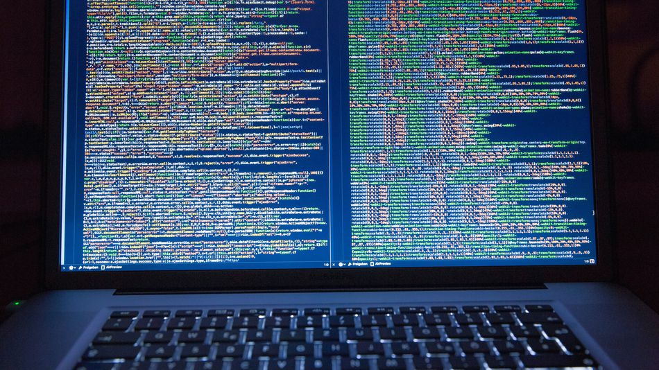
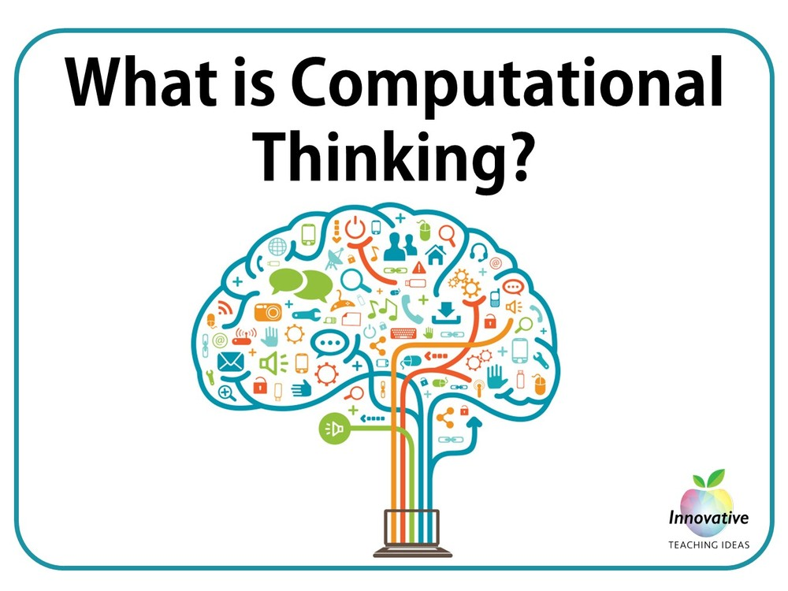
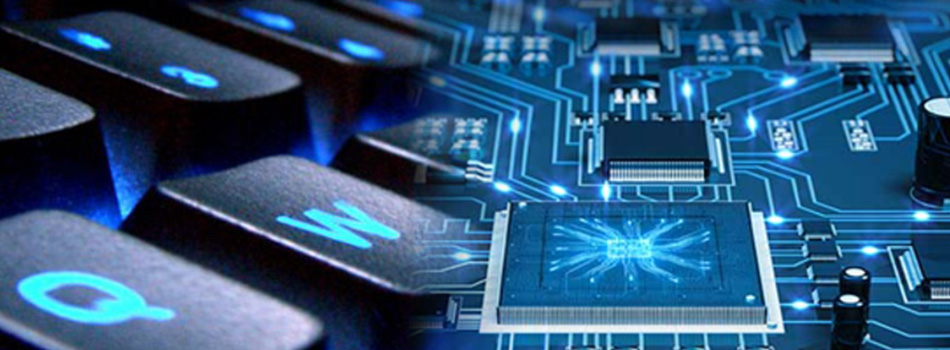

In this module, I learned about what computer science is and how it works. I also learned the skills that are needed to do Computer Science. The skills are Problem Solving, Logical Thinking, Creative Thinking, and Critical Thinking. I also learned about what the digital divide is and how it works
In module 2, I learned about Computational Thinking. Computational thinking is when you take a complex problem and break it down into four compnents which is Decomposition, Pattern Recognition, Abstraction, and Algorithm Design. It is essential for Computer Science because it is a skill used to understand the code on your computer
In module 3, I learned about the difference between the physical element of the computer and the thing that controls the computer. These are called Hardware and Software. Hardware can be Internal and External. Some types of external hardware is a Monitor, Mic, and Webcam. Some types of Internal Hardware is a CPU, RAM, and BIOS. Another thing I learned about is the process cycle. It is input, output, storage, and process. That is the process every computer has to go through to take in information and make it understandable for the user
In module 4, I learned about what an operating system is and whta happens inside of it. Some Computer Systems are Windows, Mac OSx, and Linux. I also learned about a bit system. It is a system that measures the size of a digital information. I also learned about application systems. They program software to do specific tasks.
